Removes background noise
Two noise-cancellation engines clean your voice in real time: RNNoise (free) and DeepFilterNet (Pro).
Shuusshy removes background noise from your microphone on your own computer and passes your clean voice to Teams, Discord, Zoom and every other app. Free, offline, no account.
Windows 10 and 11 (64-bit). Also for macOS (beta). macOS 11 or later, Apple Silicon and Intel — test build. Also for Windows.
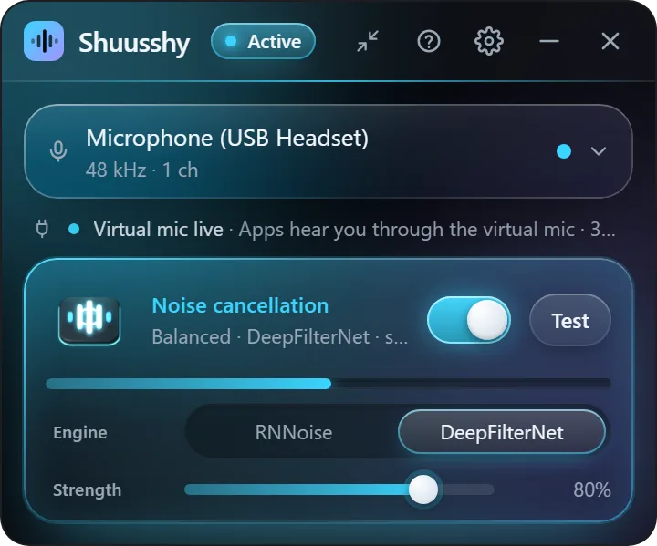
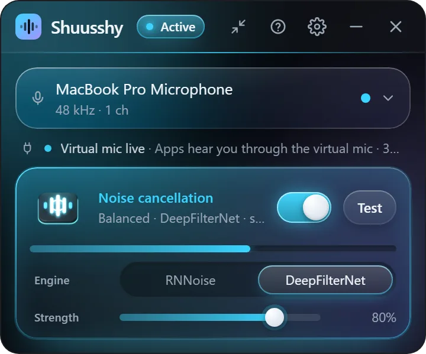
Keyboards, fans, traffic, the café next door: Shuusshy filters them out before anyone hears them, and it does it entirely on your computer.
Two noise-cancellation engines clean your voice in real time: RNNoise (free) and DeepFilterNet (Pro).
Your clean voice arrives through a virtual microphone, so Teams, Discord, Zoom, Meet and OBS just see another mic.
All processing happens on your computer. No account, nothing recorded, nothing uploaded, no analytics.
Shuusshy sits between your microphone and your apps. A free virtual audio cable (VB-CABLE on WindowsBlackHole on Mac) carries the cleaned voice to them.
Hear yourself before and after on your headphones, with level meters measured from the real audio. Nothing is recorded.
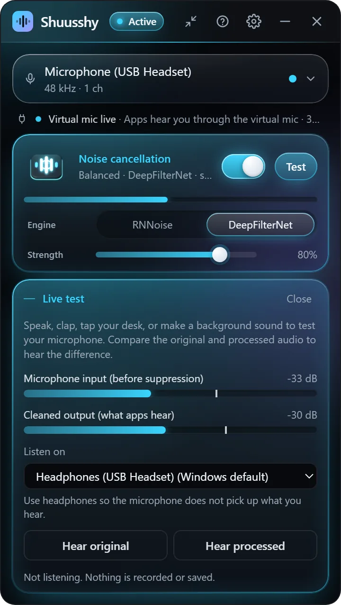
Balanced, Strong Noise Reduction, Speech Priority and Low CPU Usage — or set the engine, strength, noise gate and voice isolation (Pro: mutes quieter background talkers while you pause) yourself.
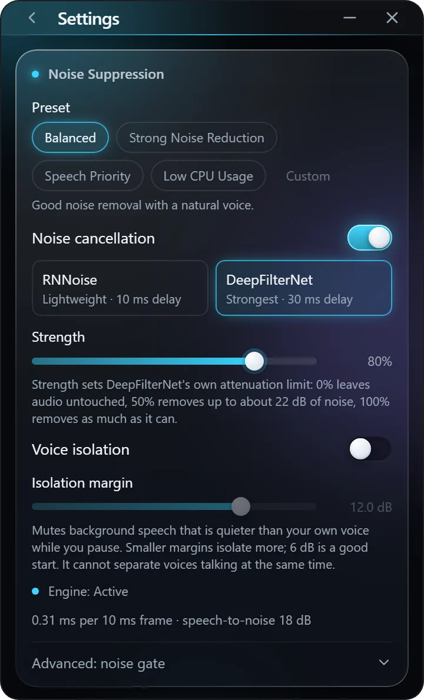
Shrink the banner to the essentials: your microphone, the on/off switch and Test. It stays on top, out of the way.
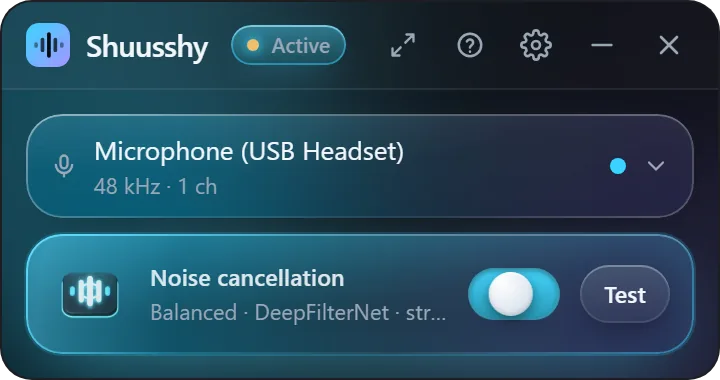
See-through glass with seven accent colours, an animated tray or menu-bar icon while it works, and a quiet start when you sign in.
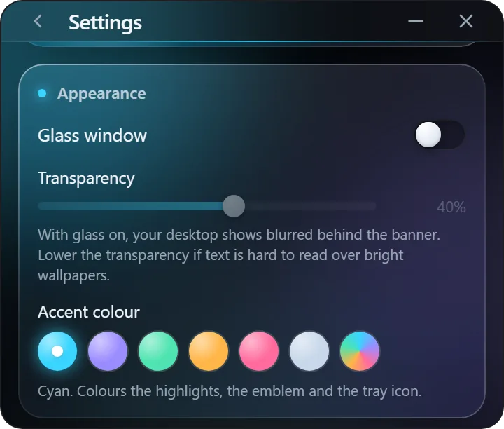
Pro keys are checked offline on your computer — no account and no internet needed.
Measured on the development PC (Windows 10) during release testing. Your figures depend on your computer and microphone. Not yet measured on a Mac.
Installs without an internet connection once downloaded. Settings are kept when you update.
Recommended. Checks for updates (you can turn it off).
Download .exeNo installation; settings stay in a data folder next to the app.
Built and tested automatically, but not yet tried on a real Mac. Please tell us how it goes.
Download .dmgThe installers are not code-signed yet, so Windows SmartScreen or macOS Gatekeeper warns the first time. The manual shows how to continue. Verify downloads with the SHA256SUMS.txt file on the release page.
The same guide is built into the app: press the ? button on the banner.
VBCABLE_Setup_x64.exe as administrator. Restart if asked.
Download BlackHole 2ch (free) and run its installer once.
In the app, this checklist ticks itself as Shuusshy detects the cable, your microphone and active noise cancellation.
Shuusshy_1.0.1_x64-setup.exe, accept the terms and finish. No administrator rights needed.Prefer no installation? The portable ZIP runs from any folder and keeps settings in a data folder beside shuusshy.exe.
If macOS says the app “is damaged”, run xattr -dr com.apple.quarantine /Applications/Shuusshy.app in Terminal, then open it again.
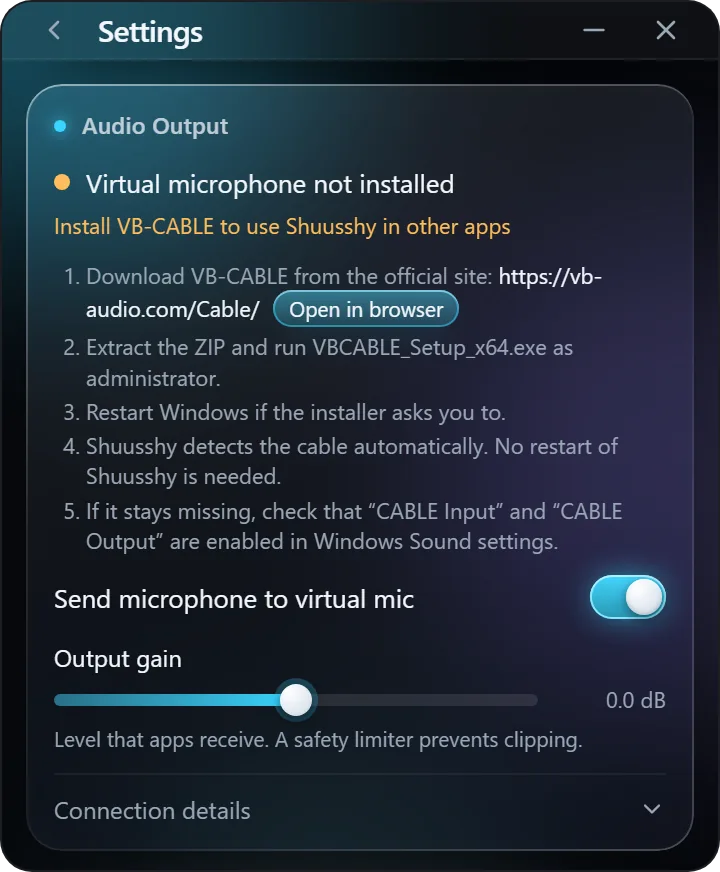
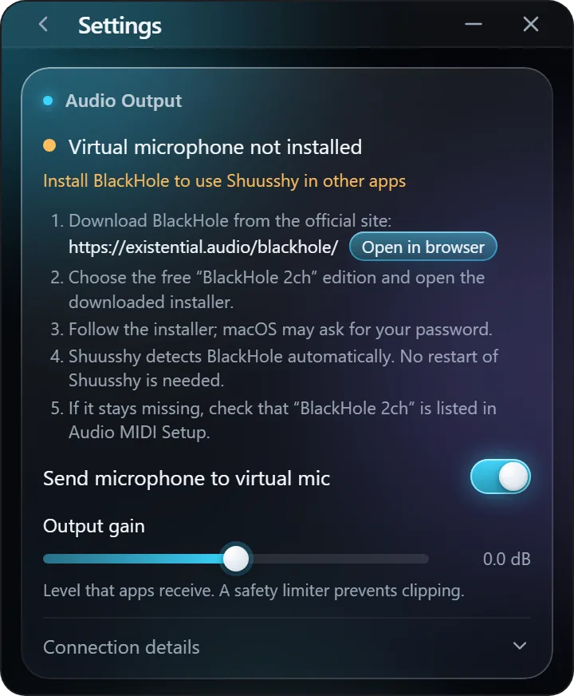
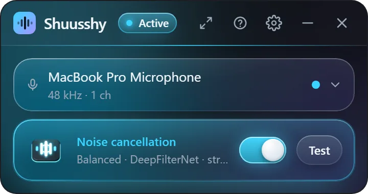
Use headphones, not speakers: speakers feed your own voice back into the microphone.
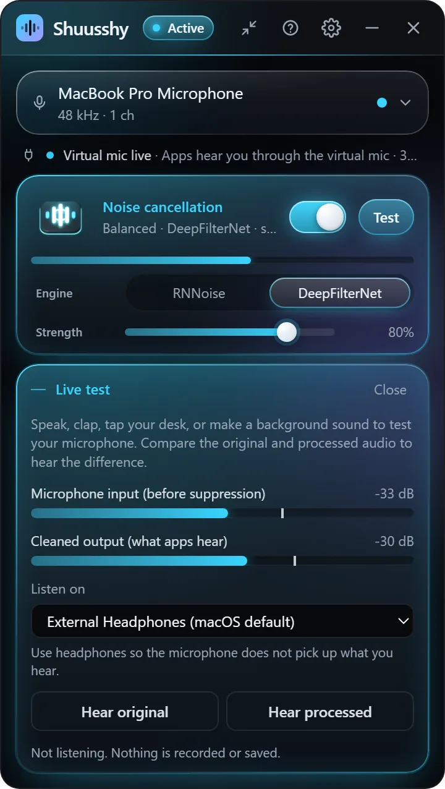
Settings → Audio Output can rename the virtual mic to “Shuusshy Microphone” so it is easy to find (Windows asks for permission).
Turn off the app’s own noise suppression, or set it to Low, so the two don’t fight.
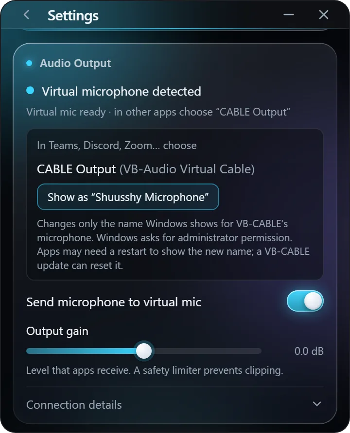
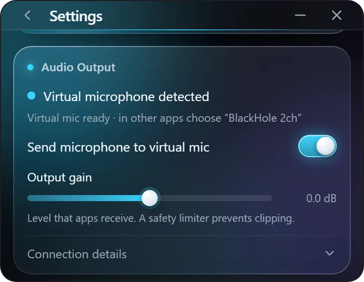
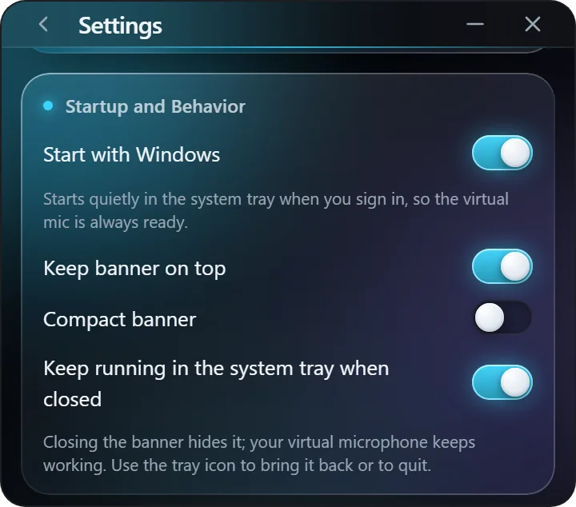
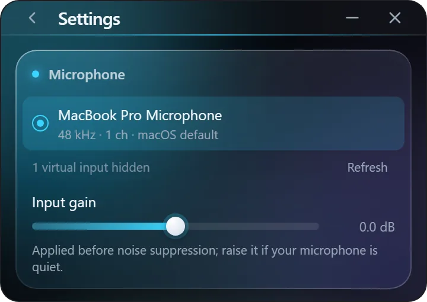
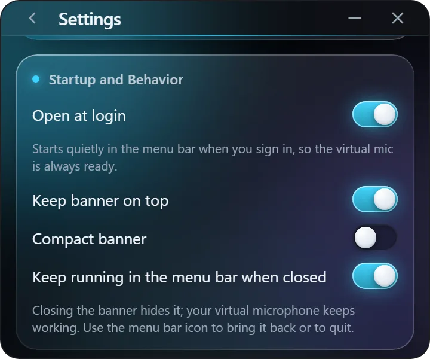
Shuusshy keeps an animated icon in the system traymenu bar that moves while noise cancellation is working.
Clicking Shuusshy in the Dock also brings the banner back.
SHUU-) and press Activate.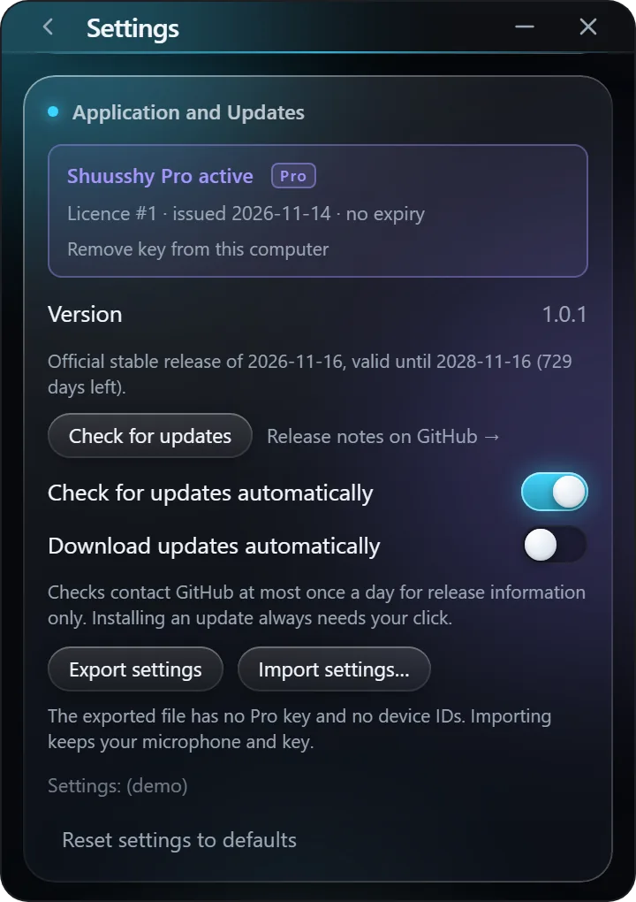
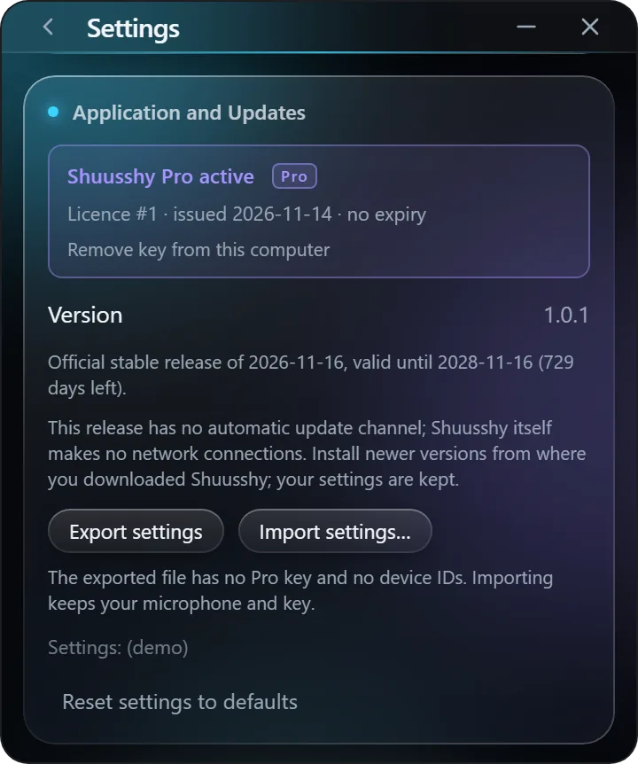
Shuusshy checks GitHub for a new version at most once a day (you can turn it off). Updates are signature-checked and installed only when you click. Your settings are kept.
The Mac version does not update itself yet: download the new .dmg from this page and drag it to Applications again. Your settings are kept.
Each official release is valid for two years. You get a reminder 30 days before and a warning 7 days before; after that, noise cancellation stops until you install a newer version. Your settings are never lost. Settings → Application and Updates shows the date.
~/Library/Application Support/com.shuusshy.app (settings) and ~/Library/LaunchAgents/com.shuusshy.app.autostart.plist (open at login).Shuusshy — its design, its code and its silent-sushi icon — is made by Ian Musa.